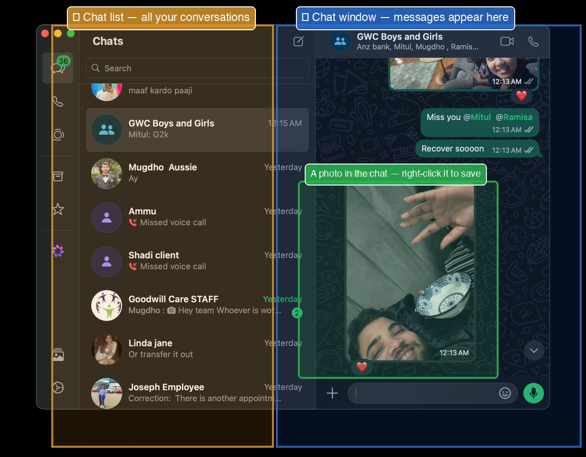
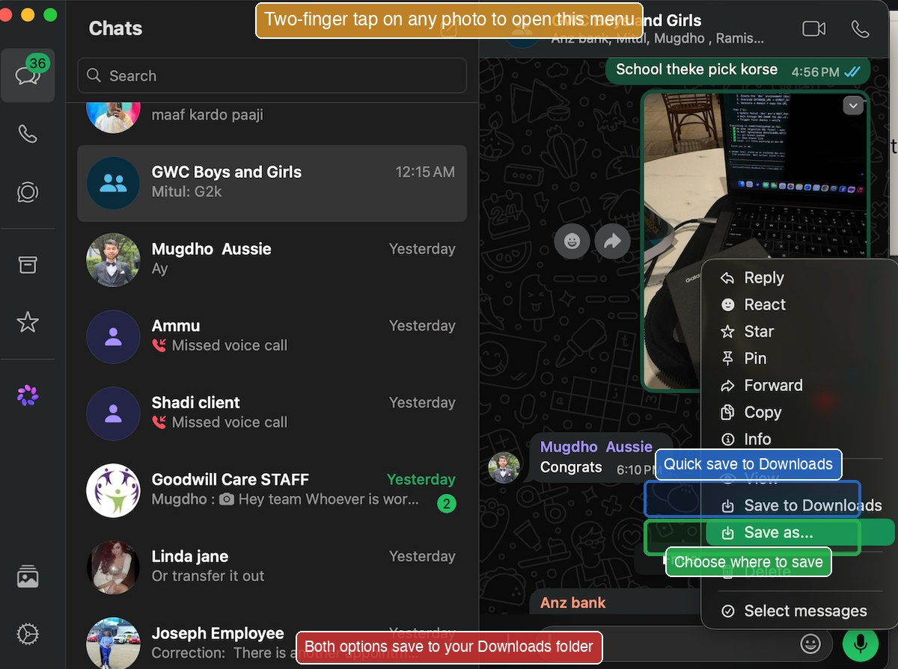

The whole workflow, in one picture.
After this slide, you'll see the full path: how a file or message moves from WhatsApp into ATLAS and back out to Email or WhatsApp.
message arrives
Downloads folder
paste & ask
copy what's useful
Email or WhatsApp
We'll go through each box, step by step, on the next slides. The whole loop takes about 2 minutes once you've done it twice.
Open WhatsApp on your Mac.
After this slide, you'll be able to open WhatsApp two different ways — whichever feels easier.
Option 1, From the Dock
Look at the icons at the bottom of your screen. Find the green WhatsApp phone icon. Click it once.
Option 2, Spotlight (faster)
- Press ⌘+Space.
- Type WhatsApp.
- Press Enter.

Save the file or photo to your Mac.
After this slide, you'll be able to save anything someone sends you on WhatsApp, and know exactly where it went.
For an image or photo:
- Open the chat and find the photo.
- Right-click on the photo (two-finger tap on the trackpad).
- Choose Save Image As… from the menu.
- A dialog opens. The default location is Downloads. Click Save.
For a document (PDF, Word, Excel):
- Click the document message in the chat.
- Look for the download arrow ⬇ (top-right of the preview).
- Click it. The file saves to your Downloads folder.

Don't see "Save Image As…"?
You may have left-clicked instead of right-clicked. On the trackpad, tap with two fingers (not one) to right-click. Or hold Ctrl and click.
Find the file you just saved.
After this slide, you'll be able to confirm in 5 seconds that any file you saved actually arrived where you expected.
- Open Finder (smiley icon in Dock).
- Click Downloads in the left sidebar.
- Your file is at the top, most recent files appear first.
-
Quick Look check: click the file once, press Space, peek inside, press Space again to close. Now you know it's the right file.
Open ATLAS, your AI browser.
After this slide, you'll have ATLAS ready to receive your file or question.
ATLAS is a web browser built around ChatGPT. It looks like any other browser, but you can ask it questions directly and it answers, using AI.
To open ATLAS:
- Find the ATLAS icon in your Dock, click it.
-
Or: press ⌘+Space, type ATLAS, press Enter.
Two ways to send your file to ATLAS.
After this slide, you'll know how to give ATLAS either a file or text — whichever fits the moment.
Method A, Drag the file in
This works for PDFs, Word docs, photos.
- Open Finder → Downloads. Find your file.
- Click and hold the file. Drag it across the screen.
- Drop it onto the ATLAS chat box.
- Wait a moment, ATLAS shows the file uploaded.
Method B, Copy and paste the text
This works when the file is text or when you only want to share part of it.
- Open the file (double-click it in Finder).
- Press ⌘+A to select everything.
- Press ⌘+C to copy.
- Click in the ATLAS chat box.
- Press ⌘+V to paste.
Ask ATLAS your question.
After this slide, you'll know how to phrase a question so ATLAS gives you the most useful answer.
Type your question into the chat box, just like you'd ask a person. Then press Enter.
Examples that work well:
- "Summarize this document in 5 bullet points."
- "Translate this letter into Bengali."
- "Explain this contract in simple words."
- "Make this email more polite."
- "What is this PDF about? Just give me the main points."
- "Rewrite this in plain English."
Tips for better answers:
- Be specific. "Summarize" is good. "Summarize in 5 bullet points" is better.
- Tell ATLAS who it's writing for. "Explain like I'm a 70-year-old retired engineer."
- If you don't like the answer, just type "make it shorter" or "say it differently", it'll try again.
Read it. Copy what's useful.
After this slide, you'll be able to grab ATLAS's answer and have it ready to send anywhere.
Method A, Use the copy button
Most ATLAS answers have a small Copy button at the bottom of the response. Click it. The answer is copied. Done.
Method B, Manual copy
- Click at the start of the text you want.
- Hold the trackpad button down and drag to the end. Text turns blue.
- Release. Press ⌘+C.
To copy everything in a single message:
Triple-click the text, Mac selects the whole paragraph automatically. Then ⌘+C.
Paste it into Email.
After this slide, you'll be able to take ATLAS's answer and send it to anyone via email, Gmail or Mail app.
Using Gmail in your browser
- Open Safari (or ATLAS) and go to gmail.com.
- Click Compose (top-left).
- Fill in the recipient and subject.
- Click in the message body. Press ⌘+V to paste.
- Click Send.
Using the Mac Mail app
- Open Mail (Dock or Spotlight).
- Click the compose button (pencil-and-paper icon).
- Fill in the recipient and subject.
- Click in the message body. Press ⌘+V.
- Click Send (paper-plane icon, top-left).
Or paste it into WhatsApp.
After this slide, you'll be able to send ATLAS's answer back to anyone on WhatsApp, closing the loop.
- Open WhatsApp (Dock or Spotlight).
- Click the chat where you want to send.
- Click in the message box at the bottom.
- Press ⌘+V to paste.
- Press Enter (or click the send arrow ➤).
Want to send the original file along with the message?
- In WhatsApp, click the + or 📎 icon next to the message box.
- Choose Document (or Photo for an image).
- Pick the file from Downloads. Click Open.
- Add a caption if you want. Press Enter to send.